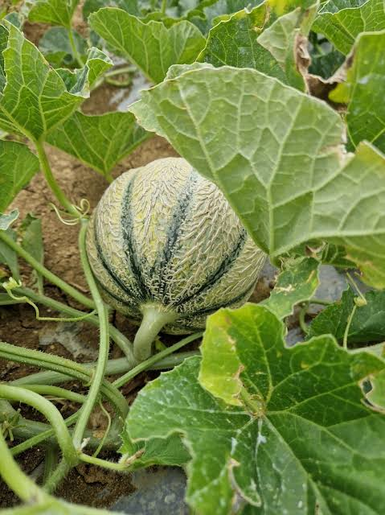

Melon
du Quercy


⟹ Produits du Terroir ⟸
Le melon du Quercy est le fruit d’été emblématique des coteaux qui s’étendent entre Montauban et Cahors, autour de Lauzerte, Montpezat-de-Quercy et Lafrançaise. C’est un melon de type charentais jaune, à l’écorce lisse ou légèrement brodée et à la chair d’un orange profond, réputé pour sa douceur sucrée et son parfum intense.

L’histoire du melon en France remonte à la fin du XVe siècle : les expéditions de Charles VIII dans le royaume de Naples ramènent dans leurs bagages jardiniers italiens et graines de cucurbitacées. D’abord fruit des potagers royaux et ecclésiastiques, le melon gagne peu à peu les campagnes du Midi, où le soleil et la chaleur lui conviennent mieux qu’ailleurs.
En Quercy, sa culture s’inscrit dans une longue tradition de polyculture familiale attestée dès le XVIIIe siècle. Sur les fermes des coteaux, quelques rangs de melons voisinent avec la vigne de chasselas, les vergers de pruniers, les céréales et l’élevage. Les sols argilo-calcaires, bien drainés, se réchauffent vite au printemps et emmagasinent la chaleur de l’été : des conditions idéales pour une maturation lente et une forte concentration en sucres.
Pendant longtemps, la production reste dispersée et vendue sans mention d’origine. Au début des années 1990, les producteurs subissent des années de mévente : leur melon est payé quelques francs le kilo alors qu’il se revend bien plus cher en grande surface. Ils décident alors de se regrouper, recensent les melonniers des communes du Quercy et créent une association de producteurs, puis, en 1997, le Syndicat interprofessionnel du Melon du Quercy, installé à Montpezat-de-Quercy.
La filière s’engage dans une démarche qualité ambitieuse qui aboutit, le 24 juin 2004, à l’enregistrement européen de l’Indication géographique protégée (IGP) « Melon du Quercy ». L’aire couvre une partie du Tarn-et-Garonne, du Lot et du Lot-et-Garonne, au sein de la région naturelle du Quercy. Chaque fruit certifié porte un sticker individuel « Melon du Quercy », et sa conformité est vérifiée par un organisme certificateur indépendant.
Le cahier des charges insiste sur la récolte à pleine maturité : le melonnier passe plusieurs fois dans la même parcelle et cueille à la main les fruits dont le pédoncule commence à se décoller, signe que le melon a atteint son optimum. Les melons sont ensuite rapidement acheminés vers les stations de conditionnement habilitées, où ils sont triés, calibrés et contrôlés, notamment sur leur taux de sucre (indice Brix).
Un bon melon se choisit lourd dans la main, avec un parfum sucré discret et un pédoncule légèrement craquelé : c’est la promesse d’une chair fondante.
Conseil de melonnier quercynoisLa notoriété du melon du Quercy est rapidement devenue nationale : dès le début des années 2000, il figure parmi les premières marques de melon identifiées par les consommateurs français. La production certifiée dépasse régulièrement les 10 000 tonnes par an, ce qui en fait l’un des piliers de l’économie agricole du nord du Tarn-et-Garonne.
Pour protéger cette filière, plusieurs expéditeurs du Tarn-et-Garonne et du Lot se sont engagés, aux côtés de la Chambre d’agriculture et du syndicat, à ne pas importer de melons pendant la pleine saison locale, de la fin juin au début octobre, afin d’éviter toute concurrence avec la production départementale.
Aujourd’hui, le melon du Quercy est un symbole de l’été dans le Sud-Ouest : servi en entrée avec le jambon de pays, en dessert, en sorbet ou en confiture, il accompagne les marchés estivaux des bastides et les repas de fête. Il participe aussi à entretenir les paysages de coteaux et à maintenir une agriculture familiale vivante dans le Quercy blanc.
Ne conservez jamais le melon entier au réfrigérateur à côté d’autres fruits : il dégage de l’éthylène qui accélère leur maturation. Sortez-le du froid une demi-heure avant dégustation.
Le conseil de la ficheCharentais jaune : type variétal principal du Quercy, écorce lisse virant au jaune à maturité, chair orange vif très sucrée.
Charentais brodé : écorce couverte d’un fin réseau liégeux (« broderie »), chair ferme et parfumée, bonne tenue après récolte.
Melon de pleine terre ou sous abri : les premiers fruits arrivent fin juin sous petits tunnels, la grande saison de plein champ s’étend de juillet à septembre.
Melon au jambon : l’entrée estivale incontournable, souvent arrosée d’un trait de Floc de Gascogne ou de muscat dans la cavité.
Confiture et sorbet : en fin de saison, le melon du Quercy se transforme en confitures (parfois au chasselas ou à la vanille) et en sorbets au basilic.
La saison du melon du Quercy s’étend de fin juin à fin septembre, avec un pic en juillet et en août. On le trouve sur tous les marchés de plein vent du nord du département.
Montpezat-de-Quercy siège du Syndicat interprofessionnel du Melon du Quercy, au cœur de la zone de production.
Lauzerte bastide perchée du Quercy blanc, entourée de coteaux de melons et de vergers ; son marché estival met le melon à l’honneur.
Montauban les marchés de la préfecture rassemblent chaque semaine les producteurs des coteaux du nord du département.
Moissac et Lafrançaise marchés de producteurs et vente directe à la ferme le long des routes des coteaux.
Fermes « Bienvenue à la ferme » de nombreux melonniers proposent la vente directe sur l’exploitation pendant la saison.